|
Project 2: Fun with E Harrison — CS180, Fall 2026 |
OverviewThis project explores what we can do with 2D convolution and the frequency content of images. In Part 1 I implement convolution from scratch and use finite-difference and derivative-of-Gaussian filters to detect edges. In Part 2 I use low- and high-pass filters to sharpen images, build hybrid images whose interpretation changes with viewing distance, and blend images seamlessly with Gaussian and Laplacian stacks. |
Part 1: Fun with Filters1.1 Convolutions from ScratchI wrote convolution two ways using only NumPy. The four-loop version iterates over every output pixel and, within that, over every kernel entry, accumulating the weighted sum by hand. The two-loop version keeps the loops over output pixels but replaces the inner two loops with a single dot product between the flattened kernel and the image patch beneath it.
Both versions flip the kernel along both axes first (that is what makes this
a convolution rather than a cross-correlation) and support zero padding in
|
|
|
I tested all three implementations on a grayscale photo with a 9×9 box filter
(every entry |
|
Input (grayscale) |
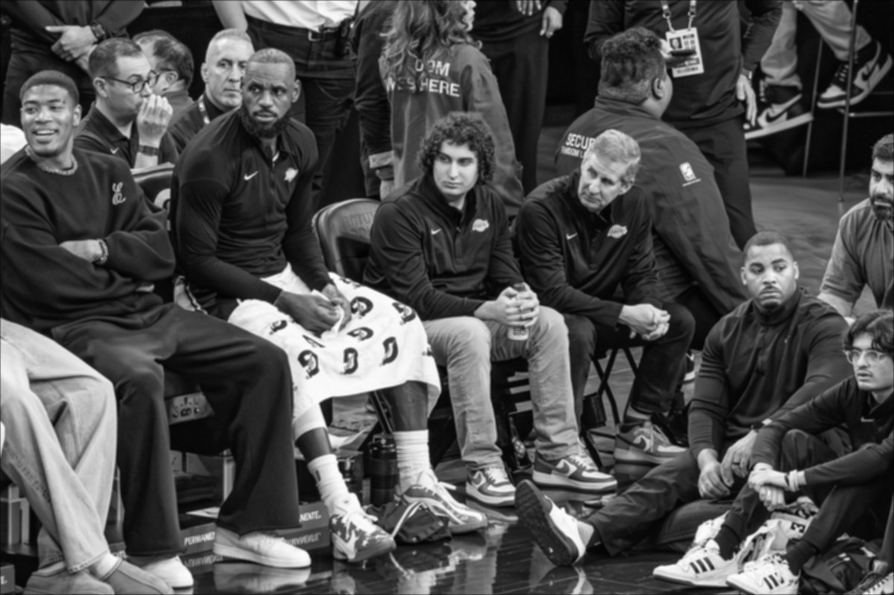 9×9 box filter |
|
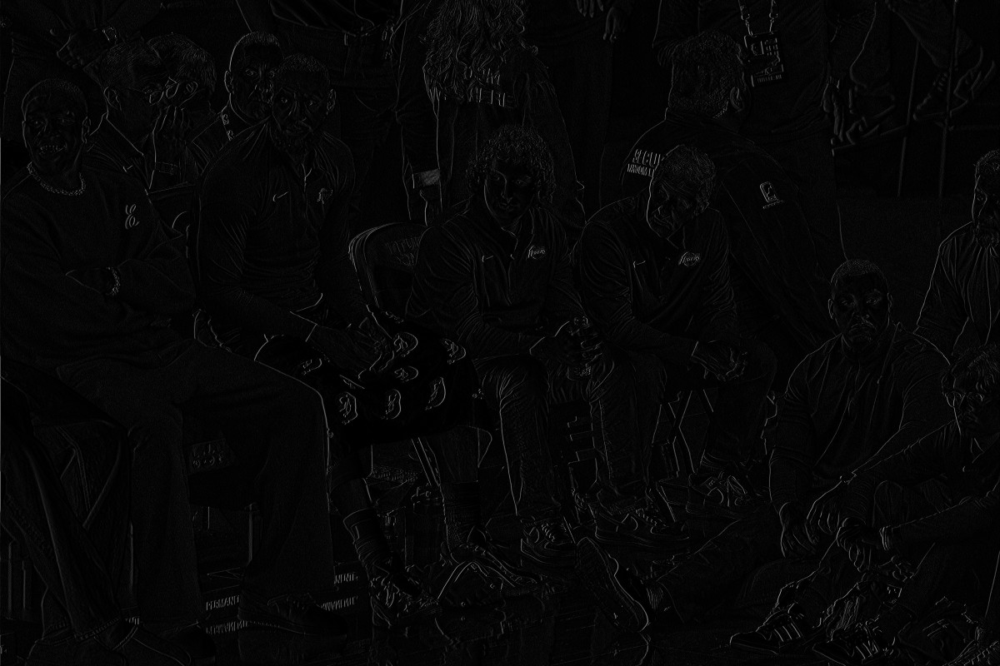 Convolved with Dx |
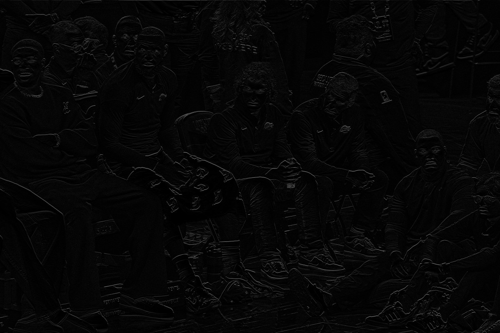 Convolved with Dy |
|
Runtime. I timed each implementation on the 542×540 cameraman image with the 9×9 box filter. The full-resolution photo above takes minutes with four loops.
Boundary handling. My implementation zero-pads the image, which is
exactly what |
1.2 Finite Difference Operator
Convolving the cameraman image with |
|
|
Original |
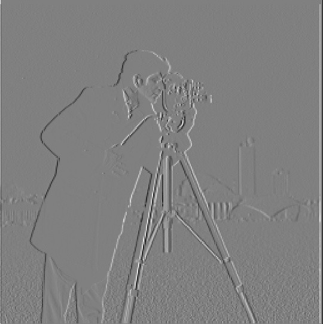 ∂I/∂x |
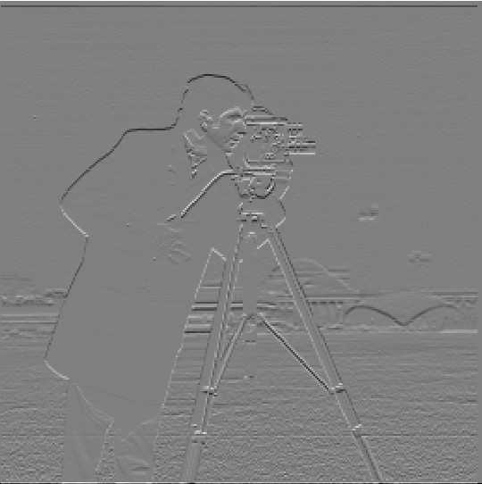 ∂I/∂y |
|
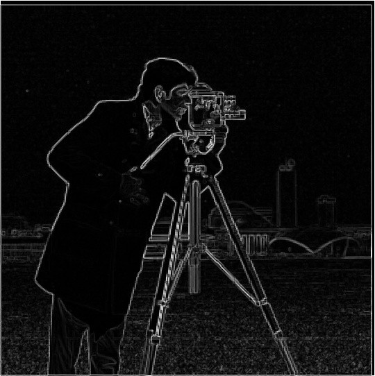 Gradient magnitude |
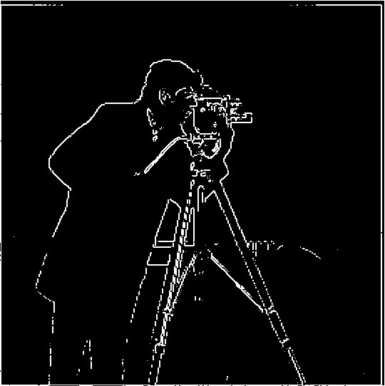 Edges (threshold = 90) |
|
Partial derivatives are shown with 0 mapped to mid-gray: bright means a positive response and dark means negative. Choosing the threshold. The threshold trades noise for missed edges. The grass in the lower half is full of small, high-frequency texture that produces many weak gradient responses. A low threshold keeps those responses and speckles the ground with false edges. A high threshold erases the thinner tripod legs and the faint buildings in the background. I chose 90 by eye. At that value the cameraman, camera, and tripod keep clear outlines, and most of the grass noise is suppressed. |
1.3 Derivative of Gaussian (DoG) Filter
The finite-difference edges are noisy because differentiation amplifies high
frequencies. The fix is to smooth first. I built a 2D Gaussian
( |
|
|
(a) Blur, then differentiate |
|
Blurred |
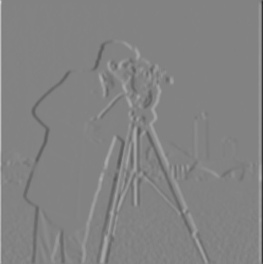 ∂/∂x of blurred |
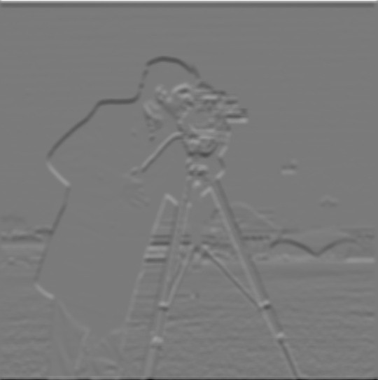 ∂/∂y of blurred |
|
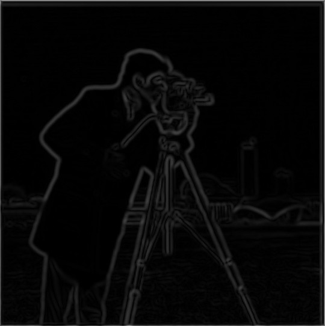 Gradient magnitude |
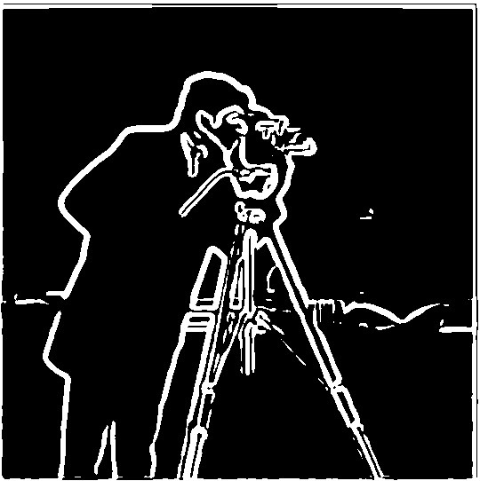 Edges (threshold = 20) |
|
What differences do you see? Compared with the plain finite differences in 1.2, the edges are far cleaner. The grass noise is almost entirely gone, and the outlines are thicker, smoother, and more continuous because the blur spreads each edge over several pixels. The price is lost fine detail: small structures such as the thin tripod features and the distant buildings become weaker or merge together. Smoothing also lowers the overall gradient values, so the threshold had to drop from 90 to 20. (b) A single convolution with DoG filters
Convolution is associative, so
|
|
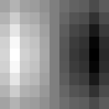 DoGx |
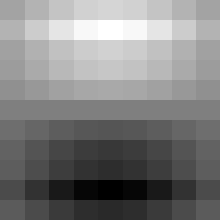 DoGy |
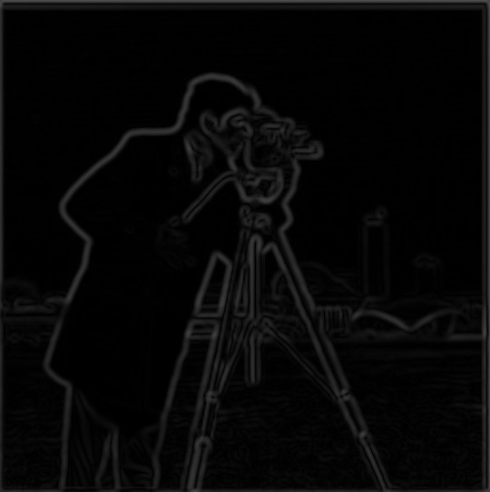 Gradient magnitude (DoG) |
Edges (DoG, threshold = 20) |
|
The DoG results match the two-step results. Away from the image border, the gradient magnitudes from (a) and (b) differ by at most about 10−13, which is floating-point round-off. Small differences can appear only within a few pixels of the frame edge, where zero padding is applied once in (b) but twice in (a). |
Part 2: Fun with Frequencies2.1 Image “Sharpening”A Gaussian is a low-pass filter, so subtracting a blurred image from the original leaves only its high frequencies: the edges and fine texture. Adding a scaled copy of those high frequencies back makes the image look sharper:
Here |
|
|
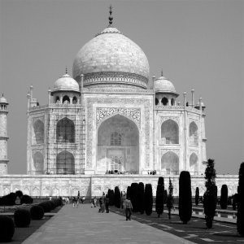 Original |
Blurred (low freq.) |
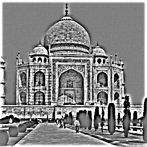 High frequencies |
Sharpened (α = 3) |
|
Gaussian: Varying the sharpening amount. Increasing α boosts the high frequencies further. Small values make the carvings on the dome crisper. Large values over-sharpen: bright/dark halos appear around every edge (see the dome against the sky and the dark cypress trees), and noise in the sky starts to show. |
|
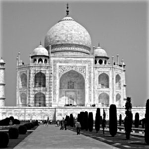 α = 0.5 |
α = 1 |

α = 3 |
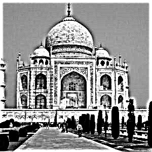 α = 6 |
|
Another image. Next I applied the unsharp mask to the photo from
Part 1.1. This image is much larger than the Taj Mahal (1200 px wide as processed),
so the |
|
Original |
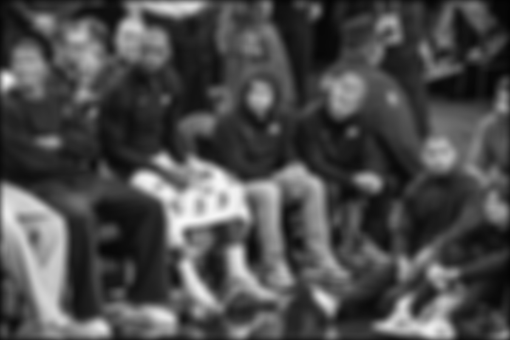 Blurred (low freq.) |
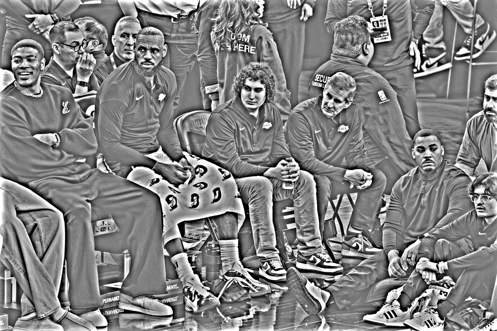 High frequencies |
|
Gaussian: |
|
α = 0.5 |
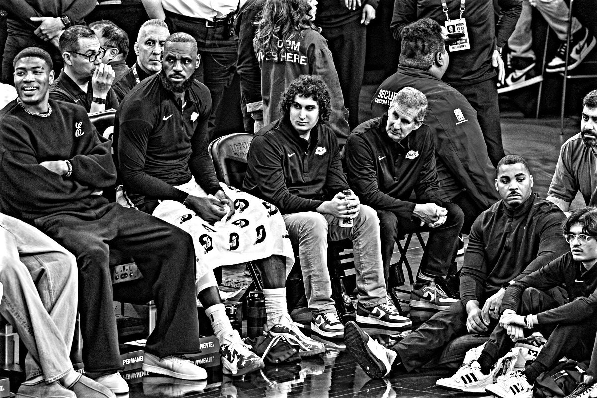 α = 1 |
|
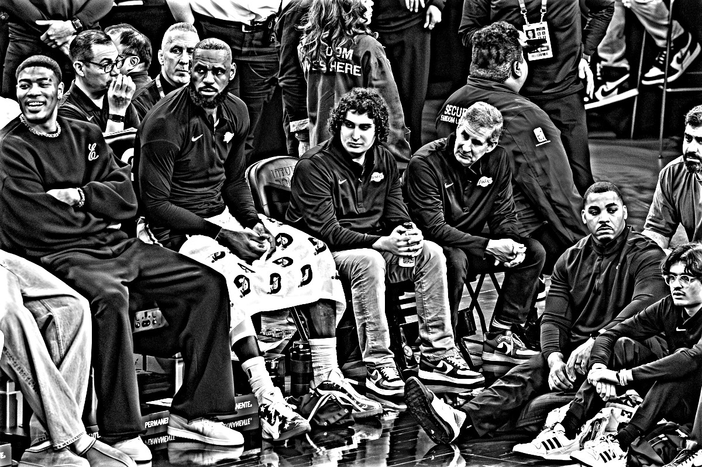 α = 2 |
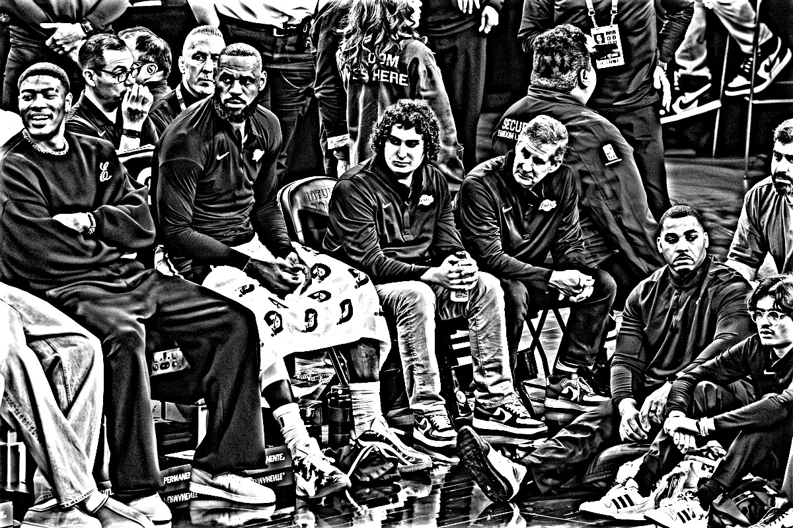 α = 4 |
|
As with the Taj Mahal, small α gives a subtle boost in clarity. By α = 4 the image is clearly over-processed: the white shoes and towels clip to pure white, the dark clothing clips to black, and bright halos surround the players. |
|
Blur, then re-sharpen. To test whether sharpening actually restores lost detail, I took the sharp Taj Mahal, blurred it with the same Gaussian, and then applied the unsharp mask (α = 3) again. |
|
Sharp |
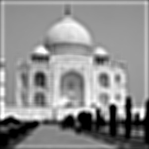 Blurred |
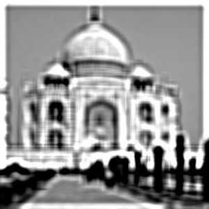 Re-sharpened |
|
The re-sharpened image is not the original. Re-sharpening restores contrast at large-scale edges such as the dome silhouette, the minarets, and the tree line, but the fine detail (the carvings and window tracery) does not come back. It also adds strong ringing halos around every edge. The σ = 5 blur drove those high frequencies to nearly zero, and sharpening can only amplify frequencies that are still present. So “sharpening” is a perceptual trick that raises edge contrast; it does not recover lost information. |
2.2 Hybrid ImagesA hybrid image combines the low frequencies of one image with the high frequencies of another. Up close, the high frequencies dominate what we see. From far away (or when the image is small), only the low frequencies survive, so the interpretation flips.
After aligning the two images on two hand-picked points, I low-pass the first image
with a Gaussian of standard deviation |
|
|
Full process: Oski + Stanford Tree. Up close you see the Stanford
Tree; step back and it turns into Oski. Oski supplies the low frequencies and the
Tree supplies the high frequencies, both with |
|
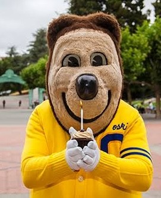 Oski (low-pass input) |
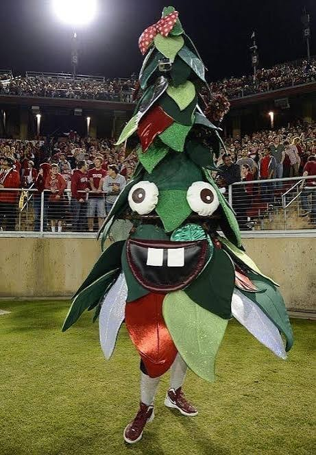 Tree (high-pass input) |
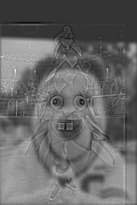 Hybrid |
|
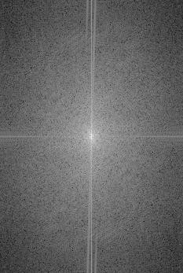 FFT: Oski (aligned) |
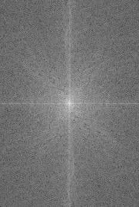 FFT: Tree (aligned) |
|
|
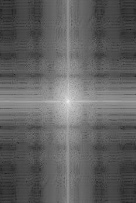 FFT: Oski, low-passed |
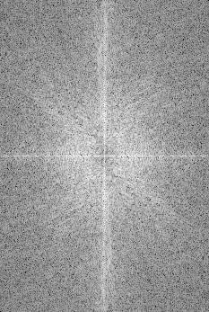 FFT: Tree, high-passed |
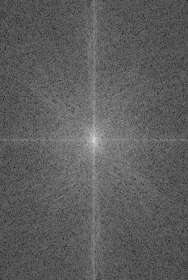 FFT: Hybrid |
|
The log-magnitude spectra show the filtering directly. Low-passing Oski dims everything away from the center of the spectrum, keeping only the coarse shape. High-passing the Tree removes the bright central peak while keeping the outer frequencies. The hybrid's spectrum is the sum of the two: a strong center from Oski surrounded by the Tree's high-frequency energy.
Choosing the cutoffs. A Gaussian with spatial standard deviation
σ has a frequency-domain standard deviation of roughly
|
|
More hybrids. In each row, the left image provides the low frequencies and the middle image provides the high frequencies. |

Derek |
Nutmeg |
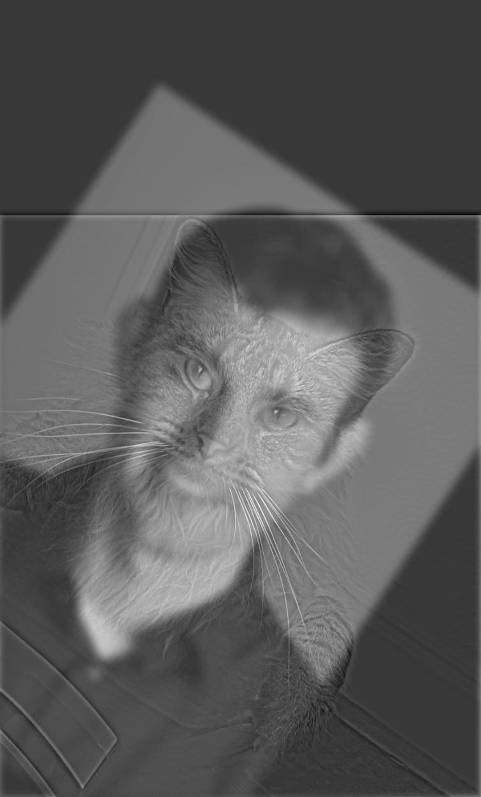 Derek + Nutmeg σlow=8, σhigh=5, ksize=25 |
|
Alyosha Efros |
Ren Ng |
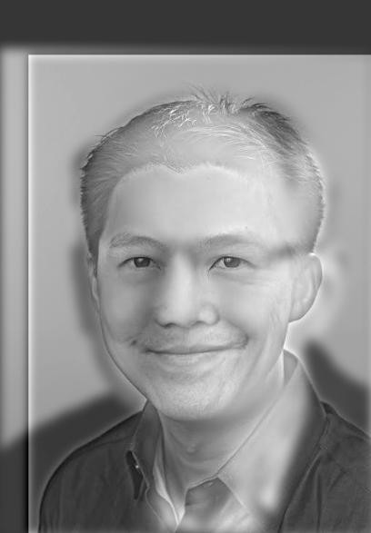 Alyosha + Ren σlow=6, σhigh=5, ksize=25 |
|
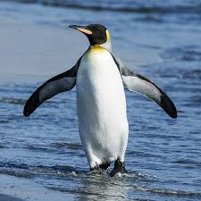 Penguin |
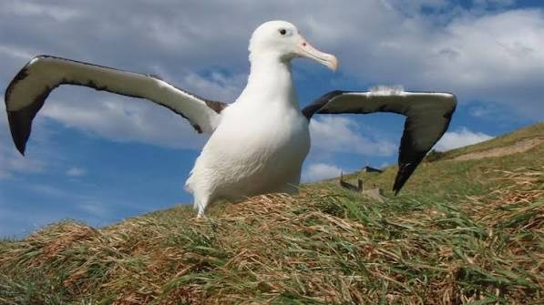 Albatross |
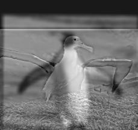 Penguin + Albatross σlow=5, σhigh=5, ksize=9 |
2.3 Gaussian and Laplacian Stacks
A Gaussian stack is like a Gaussian pyramid without the
downsampling. Each level is the previous level blurred again, so every level keeps
the original resolution. A Laplacian stack takes the difference of
consecutive Gaussian levels, which isolates one frequency band per level. The
last Gaussian level is kept as a low-frequency residual, so summing all
Laplacian levels plus the residual reconstructs the original image exactly. Both are
implemented from scratch with |
|
|
Below is my recreation of Figure 3.42 from Szeliski. I built 5-level Laplacian
stacks of the apple and orange and a Gaussian stack of a vertical step mask, all
starting at |
| Apple | Orange | Blended |
|---|---|---|
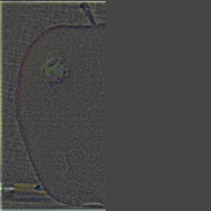 |
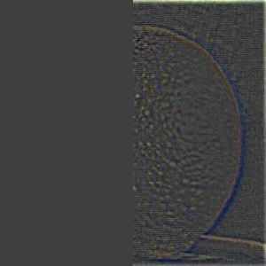 |
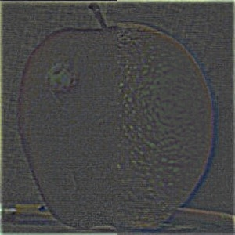 |
| Level 0 | ||
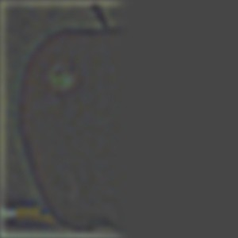 |
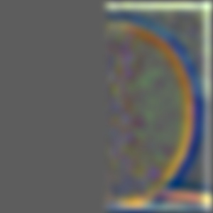 |
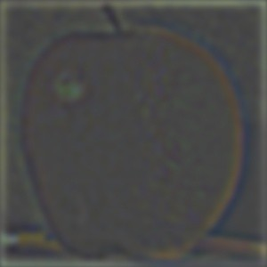 |
| Level 2 | ||
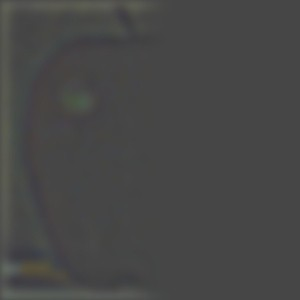 |
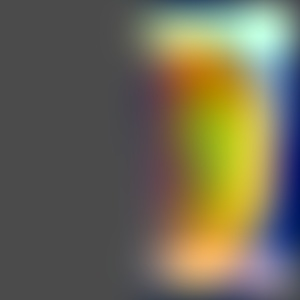 |
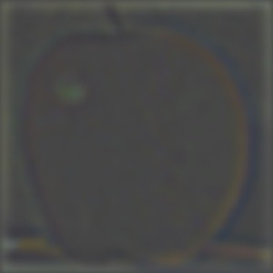 |
| Level 4 | ||
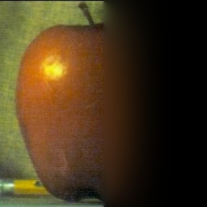 |
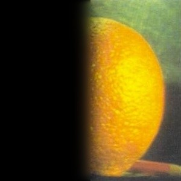 |
|
| Collapsed (sum of all levels + residual) | ||
|
Laplacian levels are min-max normalized to [0, 255] so the zero-centered band-pass detail is visible. The mask stack is built at twice the image size and center-cropped so zero padding at the borders doesn't bleed into the mask. |
2.4 Multiresolution BlendingFollowing Burt and Adelson (1983), I blend two images by combining their Laplacian stacks band by band, using a Gaussian stack of the mask as the per-band weights:
Summing the blended levels (plus the blended low-frequency residuals) gives the final image. The mask can be any shape: a vertical step for the oraple, or a hand-drawn irregular region. |
|
|
The Oraple. With a vertical step mask, simply pasting the halves
together leaves a hard, obvious seam. The multiresolution blend (5 levels,
|
|
Apple |
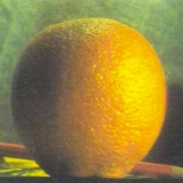 Orange |
Mask |
Hard seam |
Blended |
|
XStation 5. Here I merge an Xbox controller into a PS5 controller with an irregular mask. The mask selects the Xbox's face buttons, thumbsticks, and grips and places them on the PS5 body. The blend smooths the differences in shading and white balance between the two controllers along the seam. |
|
Xbox |
PS5 |
Mask |
Hard seam |
Blended |
|
The final XStation 5. |
|
Favorite: the LEGO Skyline. My favorite result replaces the front of a real Nissan Skyline with the front of a LEGO Skyline, using a hand-drawn, irregular mask around the hood, bumper, and windshield. With a hard paste, the LEGO section looks cut out: its lighting and color don't match the real car. The 5-level blend softens that transition into the real car's paint. |
|
LEGO Skyline |
Real Skyline |
Irregular mask |
|
Hard seam |

Multiresolution blend |
|
The figure below mirrors Figure 10 of the Burt and Adelson paper. Each row is one Laplacian level: the masked LEGO band, the masked real-car band, and their sum. The bottom row collapses each column into the masked input images and the final blend. |
| LEGO (masked) | Real car (masked) | Blended |
|---|---|---|
| Level 0 | ||
| Level 2 | ||
| Level 4 | ||
| Collapsed: masked inputs and final blend | ||
|
Website template from Jon Barron. |